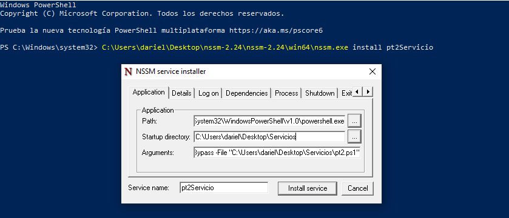
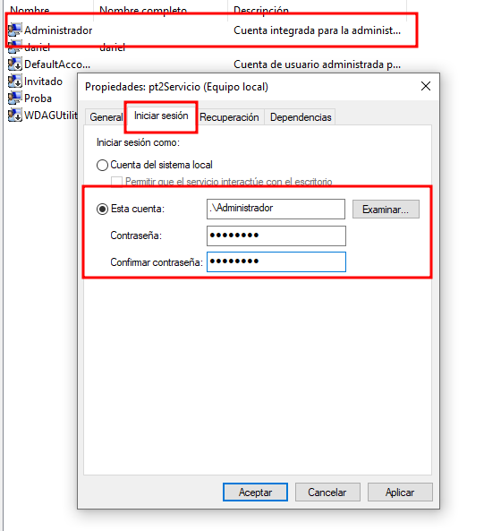

Creación de un servicio en Windows
En esta práctica explico cómo creé un servicio en Windows que ejecuta automáticamente un script de PowerShell usando NSSM (Non-Sucking Service Manager). Usé NSSM para instalar un script como servicio y configurar el ejecutable, los argumentos, el directorio de inicio y la cuenta de ejecución.

Resumen: - Un servicio es un proceso en segundo plano que puede iniciarse automáticamente al arrancar el sistema. - NSSM me permite convertir scripts/aplicaciones en servicios gestionados por el sistema con opciones avanzadas de configuración.
Instalación del servicio con NSSM
Ejecuto NSSM desde PowerShell para instalar el servicio:
C:\Users\dariel\Desktop\nssm-2.24\nssm-2.24\win64\nssm.exe install pt2Servicio
Se me abrirá la interfaz gráfica de NSSM. Configuro los campos principales:

Campos y valores que utilicé:
- Path:
system32\WindowsPowerShell\v1.0\powershell.exeIndica que el servicio ejecutará PowerShell. - Startup directory:
C:\Users\dariel\Desktop\ServiciosCarpeta donde está el script. - Arguments:
-ExecutionPolicy Bypass -File "C:\Users\dariel\Desktop\Servicios\pt2.ps1"Permite ejecutar pt2.ps1 saltando la política de ejecución. - Service name:
pt2ServicioNombre del servicio que creé.
Al pulsar "Install service", obtengo la confirmación de instalación:

Configuración del servicio en Windows
Puedo ver el servicio en la lista de servicios del sistema:

Desde la consola de servicios puedo: - Iniciar, detener o reiniciar el servicio. - Configurar tipo de inicio: Automático, Manual o Deshabilitado. - Ajustar propiedades como la cuenta bajo la cual se ejecuta.
En la pestaña "Iniciar sesión" selecciono una cuenta con los privilegios necesarios:

Inicio del servicio y verificación
Inicio el servicio desde PowerShell:
net start pt2Servicio

En la consola de servicios veo el servicio en estado "En ejecución":
Script asociado (pt2.ps1)
A continuación el script real utilizado y una breve explicación.
# Mostrar notificación personalizada
Add-Type -AssemblyName System.Windows.Forms
[System.Windows.Forms.MessageBox]::Show("¡Bienvenido! El sistema se ha iniciado correctamente.", "Servicio Activo")
# Ruta del log
$logPath = "C:\Users\dariel\Desktop\Servicios\pt2.log"
# Recopilar información del sistema
$usuario = $env:USERNAME
$equipo = $env:COMPUTERNAME
$ip = (Get-NetIPAddress -AddressFamily IPv4 -InterfaceAlias "Ethernet" | Where-Object {$_.IPAddress -ne "127.0.0.1"}).IPAddress
$ram = [math]::Round((Get-CimInstance Win32_ComputerSystem).TotalPhysicalMemory / 1GB, 2)
$inicio = (Get-CimInstance Win32_OperatingSystem).LastBootUpTime
# Guardar información inicial
Add-Content -Path $logPath -Value "`n--- Inicio de sesión ---"
Add-Content -Path $logPath -Value "Usuario: $usuario"
Add-Content -Path $logPath -Value "Equipo: $equipo"
Add-Content -Path $logPath -Value "IP: $ip"
Add-Content -Path $logPath -Value "RAM: $ram GB"
Add-Content -Path $logPath -Value "Inicio del sistema: $inicio"
Add-Content -Path $logPath -Value "-------------------------`n"
# Monitorizar procesos abiertos por el usuario
$procesosPrevios = @()
while ($true) {
$procesosActuales = Get-Process | Select-Object -ExpandProperty ProcessName
$nuevos = $procesosActuales | Where-Object { $_ -notin $procesosPrevios }
foreach ($proceso in $nuevos) {
$hora = Get-Date -Format "HH:mm:ss"
Add-Content -Path $logPath -Value "$hora - Aplicación iniciada: $proceso"
}
$procesosPrevios = $procesosActuales
Start-Sleep -Seconds 5
}
Explicación:
- Muestra una notificación inicial mediante System.Windows.Forms.
- Registra en un fichero de log información del sistema (usuario, equipo, IP, RAM y hora de arranque).
- Monitoriza procesos y añade al log las aplicaciones que aparecen nuevas, comprobando cada 5 segundos.
- Nota: al ejecutarlo como servicio hay que asegurar permisos y rutas; la notificación gráfica puede no mostrarse si el servicio no interactúa con el escritorio (sesión 0).
Pasos finales para automatizar el arranque
- Configuro el servicio con inicio automático.
- Reinicio el sistema y verifico que el servicio se inicia correctamente.
- Compruebo permisos y dependencias (cuenta de servicio, rutas accesibles, variables de entorno) para evitar errores durante el arranque.